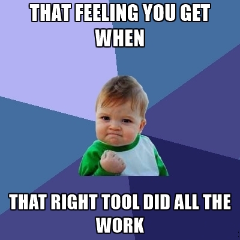

I ♥ Maven
Build stuff

AJAX. A concept
AJAX is not a tool, language or technology, but a concept.
This concept combines technologies to enable asynchronous communication with the server.
Little bits of information are being communicated with the server only if needed.
Your website will be quicker and your users will not have to wait for a full page reload each time.


Useful Links
Get started and be a jQuery pro soon!
jQuery official documentation & W3schools